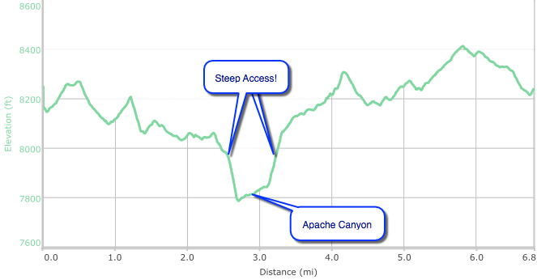

Hike New Mexico
w/ Tom & Ken
Apache Canyon Trail
| Difficulty | Round-trip | Type | Elev. Chg. | Exposure | Wow Factor | Facilities | Seasons | Flickr | By Car |
|---|---|---|---|---|---|---|---|---|---|
| Medium-Easy | 7.1 miles | Loop | 600 ft | Sun, some shade | Canyon | None | Not Winter | Album |  |



- Apr 14, 2016: The trail begins down the road
- Apr 14, 2016: Scenic views looking south
- Apr 14, 2016: Blue skies and forest road
- Apr 14, 2016: Trail departs from the road to head towards the canyon
- Apr 14, 2016: Tom with appropriately named Shaggy Peak
- Apr 14, 2016: Water in the canyon
- Apr 14, 2016: In the distance, bigger peaks of the Sangre de Cristo
- https://www.flickr.com/photos/139088815@N08/27694199916/in/photostream/
- https://www.flickr.com/photos/139088815@N08/27653390411/in/photostream/
- https://www.flickr.com/photos/139088815@N08/27653401221/in/photostream/
- https://www.flickr.com/photos/139088815@N08/27627369052/in/photostream/
- https://www.flickr.com/photos/139088815@N08/27627355972/in/photostream/
- https://www.flickr.com/photos/139088815@N08/27449903280/in/photostream/
- https://www.flickr.com/photos/139088815@N08/27694168456/in/photostream/
The Apache Canyon Trail begins as a branch off of Forest Road Forest Road 79, East of Santa Fe. From here, the trail proceeds sometimes as a trail and sometimes as a dirt road, providing beautiful glimpses into the Sangre de Cristo Mountains. With a peak finder, you can see Shaggy Peak, Thompson Peak, and Atalaya Mountain. When the trail reaches the canyon, it drops quite steeply down to the creek, then back up (steeply!). Most of the trail is easy, and the steep parts are at least not long. There are references online to a battle having to do with Apache Canyon (Glorietta Pass), but it is not clear that the hike is in the same area.